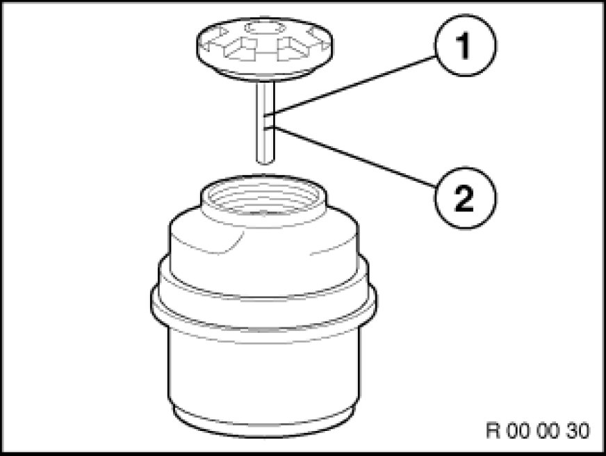
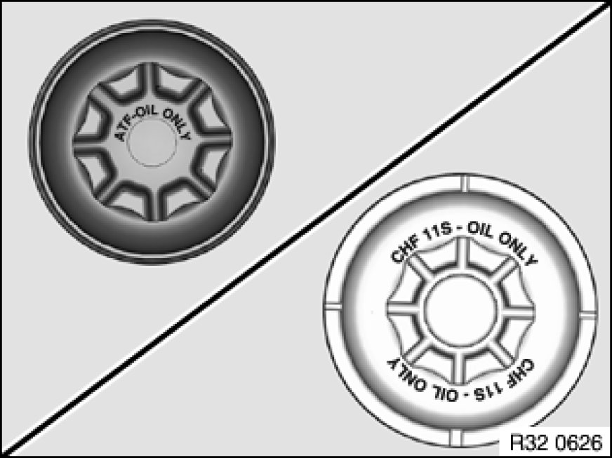

Power Steering Fluid: Testing and Inspection
00 00 ... - Steering fluid reservoir: Check oil level.

Important!
Adhere to the utmost cleanliness. Do not allow any dirt to enter the hydraulic system.
Using contaminated equipment to add fluid may introduce dirt particles into the fluid reservoir and significantly reduce the service life of the power steering system. Do not use any filler funnels or similar!

Visual inspection and leak test
Check connections, hoses and steering gear for traces of fluid.

Checking fluid level
Check fluid level with engine switched off at expansion tank of power steering/ride-height control system. The fluid temperature should be approx. 20 °C here.
Ensure that the cap is fully screwed in prior to the fill level check.
If necessary, add hydraulic fluid (refer to Service Information Operating Fluids) up to Max. marking (1).
Important!
If the fluid level has dropped to the Min. marking (2), you must check the power steering and ride-height control for leaks and issue a separate invoice for this work.
It is not enough merely to top up the fluid.

Note:
To avoid mix-ups when filling with hydraulic fluid, mark the fluid reservoirs or their caps with identification marks.
ATF - Automatic transmission fluid
CHF - Pentosin CHF11S